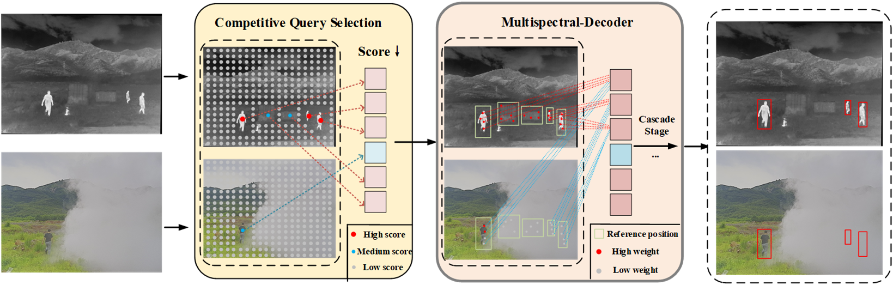
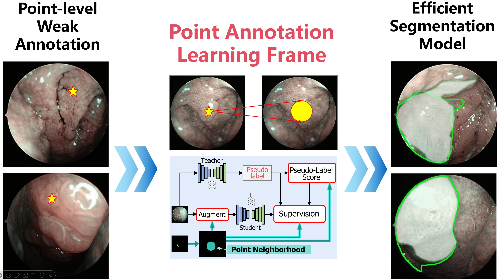
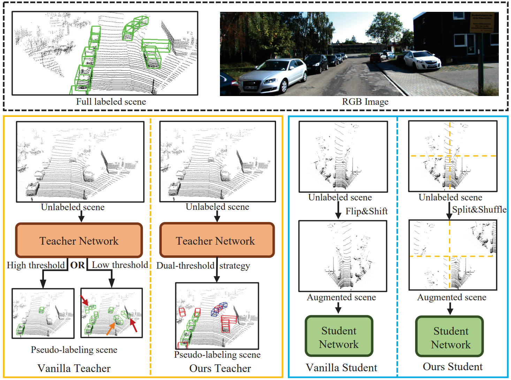
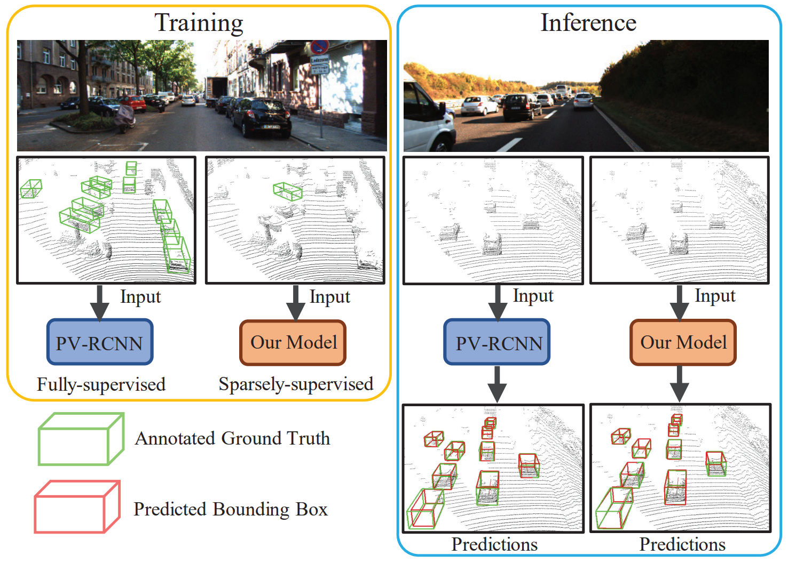

Chenqiang Gao (高陈强)
 |
Professor, [Google Scholar] , [GitHub] School of Intelligent Systems Engineering Sun Yat-sen University (Shenzhen Campus) [Home] [Publication] [个人中文介绍] [招生说明] [Contact] |
Selected Papers (Updating soon)

|
DPDETR: Decoupled Position Detection Transformer for Infrared-Visible Object Detection Junjie Guo, Chenqiang Gao*, Fangcen Liu, Deyu Meng Paper in submission, 2024. |
|  |
DAMSDet: Dynamic Adaptive Multispectral Detection Transformer with Competitive Query Selection and Adaptive Feature Fusion. Junjie Guo, Chenqiang Gao*, Fangcen Liu, Deyu Meng, Xinbo Gao European Conference on Computer Vision (ECCV), 2024. |
 |
Infmae: A foundation model in infrared modality. Fangcen Liu, Chenqiang Gao*, Yaming Zhang, Junjie Guo, Jinhao Wang, Deyu Meng European Conference on Computer Vision (ECCV), 2024. |
|  |
A Point-Neighborhood Learning Framework for Nasal Endoscope Image Segmentation. Pengyu Jie, Wanquan Liu, Chenqiang Gao*, Yihui Wen, Rui He, Pengcheng Li, Jintao Zhang, Deyu Meng Paper in submission, 2024. |
|  |
Hierarchical Supervision and Shuffle Data Augmentation for 3D Semi-Supervised Object Detection. Chuandong Liu, Chenqiang Gao*, Fangcen Liu, Pengcheng Li, Deyu Meng, Xinbo Gao Conference on Computer Vision and Pattern Recognition (CVPR), 2023. |
|  |
SS3D: Sparsely-Supervised 3D Object Detection from Point Cloud. Chuandong Liu, Chenqiang Gao*, Fangcen Liu, Jiang Liu, Deyu Meng, Xinbo Gao Conference on Computer Vision and Pattern Recognition (CVPR), 2022. |